Exploring group presentations and Cayley graphs using GAP
Mike Grady / June 2020
In a beautiful early paper on group theory, Maschke [1] gave many of the now classic Cayley graphs of the polyhedral groups. All of them form edge graphs of the Archimedean solids [2], and provide an attractive entry into the exploration of group presentations using the GAP System [3].
In this tutorial, we examine the Archimedean solids one by one and guess at the generators and relations evident in their edge graphs. GAP makes it easy to test our guesses. (We assume the reader has GAP installed. If not, please visit the GAP System website). It may also prove helpful to have the excellent Wikipedia article on the Archimedean solids in front of you as we go along.
1. Truncated Octahedron.
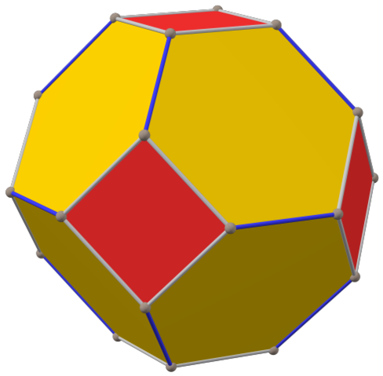
Image by Tilman Piesk, licensed under CC BY 4.0
The truncated octahedron [2] has six square faces, 8 hexagonal faces and
24 vertices, with each vertex having three edges incident to it. If its
edges form a Cayley graph, the group must have order 24, the same as
the number of vertices.
Let the edges surrounding each square represent generator “a” directed
clockwise as seen from above. Let the edges connecting squares
represent generator “b”. The visible part of the corresponding edge graph looks like this:
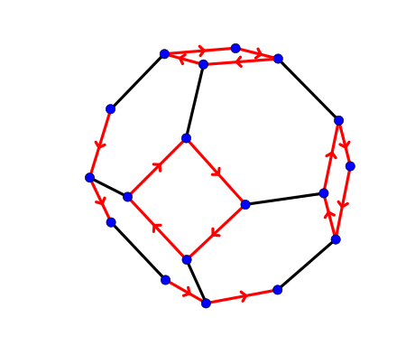
Relators are words spelled out by circuits in the graph. They equal the identity in the group under consideration. The red square and black edge above give relators a^4 and b^2, following the convention that directed loops of length two are drawn as a single undirected edge. The hexagon gives relator (a*b)^3. This suggests the following presentation:
< a, b | a^4, b^2, (a*b)^3 >
It is a simple matter to test this presentation in GAP.
We first create a free group on two generators and give the generators the names “a” and “b”.
gap> f := FreeGroup(2);
gap> a := f.1;
gap> b := f.2;
We next list the relators that define the group, and take the quotient of the free group of rank two with the normal closure of the subgroup generated by these relators.
gap> rels := [a^4, b^2, (a*b)^3];
gap> G := f/rels;
Finally, we ask GAP to give the name of this group and its order.
gap> newline := "\n";
gap> Print("group: ", StructureDescription(G), " order: ", Order(G), newline);
As expected, the group is S4, the rotation group of the octahedron, whose order is 24.
If the edge graph of this polyhedron is given a Schlegel projection onto the plane, we have the classic Cayley graph of S4 given by Maschke:
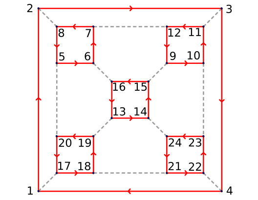
By numbering the vertices, we can immediately give a regular permutation representation of G:
gap> a := (1,2,3,4)(5,6,7,8)(9,10,11,12)(13,14,15,16)(17,18,19,20)(21,22,23,24);
gap> b := (1,17)(2,8)(3,11)(4,22)(5,20)(6,16)(7,12)(9,15)(10,23)(13,19)(14,24)(18,21);
gap> G := Group(a,b);
gap> Print("group: ", StructureDescription(G), " order: ", Order(G), newline);
We now briefly look at the remaining Archimedean Solids and guess the presentations of their corresponding groups. The excellent POVRay renderings of Tilman Piesk make this easy. The reader is encouraged to type and run the corresponding GAP commands. Here, we give only computed results. To see the Schlegel projections of the corresponding Cayley graphs, we refer you to Maschke’s original paper [1], to Tom Ruen’s renditions of the Archimedean edge graphs [4] or to N. S. Wedd’s interesting website [5] on a variety of Cayley graphs, including those of the polyhedral groups and groups of low order.
2. Truncated Tetrahedron.
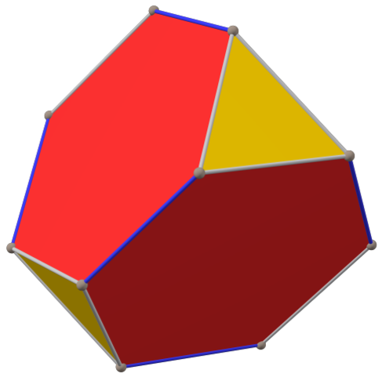
Image by Tilman Piesk, licensed under CC BY 4.0
Each vertex of the truncated tetrahedron has three edges incident to it.
The triangle gives relation a^3, and the edges connecting two
triangles give b^2. Our presentation is:
< a, b | a^3, b^2, (a*b)^3 >
This is the Alternating group on four symbols: A4, the rotation group of the tetrahedron.
3. Cubeoctahedron.
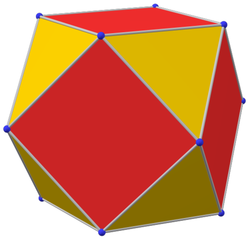
Image by Tilman Piesk, licensed under CC BY 4.0
Here, we can’t assign the same generator of order three to all the
triangles because each edge would be labeled with the same generator,
and any path would consist of words in a single letter, giving at most a
group of order three.
Instead, let’s suppose two different generators of order three meet at a
vertex,
giving a square circuit of length four: (a*b)^2.
< a, b | a^3, b^3, (a*b)^2 >
The cubeoctahedron has twelve vertices, so if the edges form a Cayley graph, we expect to find a group of order 12. In fact, this presentation gives us A4 again, the rotation group of the tetrahedron.
This is a good time for a couple of exercises. Answers are given at the end of the tutorial.
Exercise 1: What happens if we try to assign two different generators of order four meeting at every vertex? Does this yield a Cayley graph?
Exercise 2: What about a generator of order four and two of order two meeting at every vertex?
4. Truncated Cube.
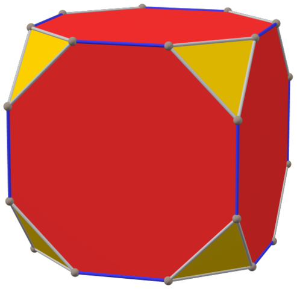
Image by Tilman Piesk, licensed under CC BY 4.0
This one is easy. There are two obvious circuits. Try
< a, b | a^3, b^2, (a*b)^4 >
You should get S4, the rotation group of the cube.
5. Rhombicubeoctahedron.
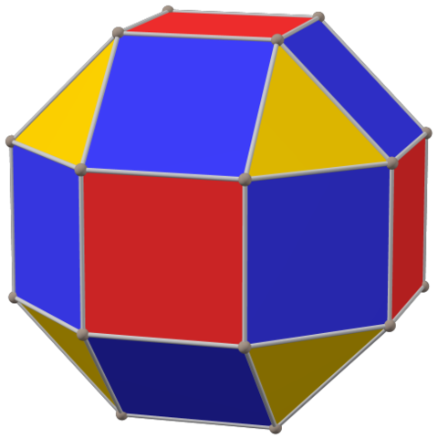
Image by Tilman Piesk, licensed under CC BY 4.0
Consider the red squares and yellow triangles:
< a, b | a^4, b^3, (a*b)^2 >
This is yet another presentation of S4. We have different presentations of the same abstract group, yet they have clear geometric meaning.
6. Truncated Cubeoctahedron.
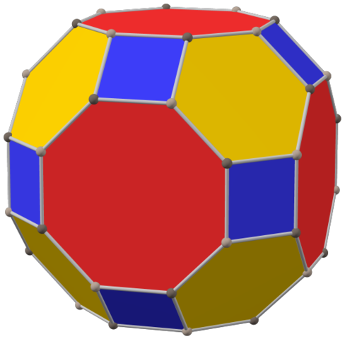
Image by Tilman Piesk, licensed under CC BY 4.0
The truncated cuboctahedron has twelve squares, eight hexagons, six
octagons and 48 vertices. So we need a group of order 48. If we tried
to use a generator of order four and another of order two, we would have
the following relators: a^4, b^2, (ab)^4, (ab)^3. But if (ab)^3 is the identity, then (ab)^4 = a*b = identity.
Exercise 3: What group do you get with the above generators? Why is this not an acceptable assignment of generators to edges if we want a Cayley graph?
Notice that every vertex has three edges. What happens if we use three generators of order two? In order to make sure to label each edge in a circuit properly, let’s use the following definition:
“a” is an edge that is adjacent to a square and a hexagon. “b” is an edge that is adjacent to a hexagon and an octagon. “c” is an edge that is adjacent to a square and and octagon.
This assignment gives the following presentation:
< a, b, c | a^2, b^2, c^2, (ac)^2, (ab)^3, (c*b)^4 >
Since we have three generators, our GAP code must be modified to use a free group of rank 3.
gap> f := FreeGroup(3);
gap> a := f.1;
gap> b := f.2;
gap> c := f.3;
gap> rels := [a^2, b^2, c^2, (a*c)^2, (a*b)^3, (b*c)^4];
gap> G := f/rels;
gap> Print("group: ", StructureDescription(G), " order: ", Order(G), newline);
This gives the full octahedral group: C2 x S4, with order 48.
7. Snub Cube.
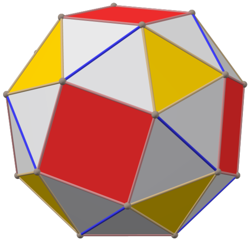
Image by Tilman Piesk, licensed under CC BY 4.0
Using a red square, a yellow triangle and a blue edge, we get presentation:
< a, b, c | a^4, b^3, c^2, (abc) >
Exercise 4: Verify this works using GAP.
8. Truncated Dodecahedron.
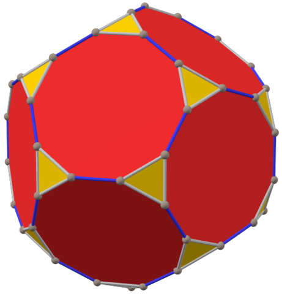
Image by Tilman Piesk, licensed under CC BY 4.0
Another easy one:
< a, b | a^3, b^2, (a*b)^5 >
You should get the alternating group A5, the rotation group of the dodecahedron.
9. Truncated Icosahedron.
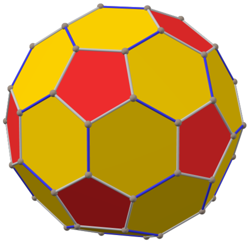
Image by Tilman Piesk, licensed under CC BY 4.0
Once again, the obvious presentation should work.
< a, b | a^5, b^2, (a*b)^3 >
10. Rhombicosidodecahedron.
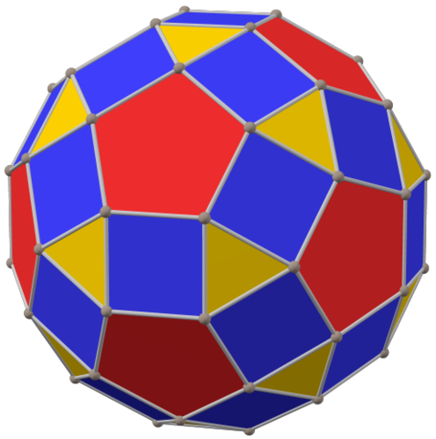
Image by Tilman Piesk, licensed under CC BY 4.0
Red pentagons and yellow triangles.
< a, b | a^5, b^3, (a*b)^2 >
Another presentation of A5.
11. Truncated Icosidodecahedron.
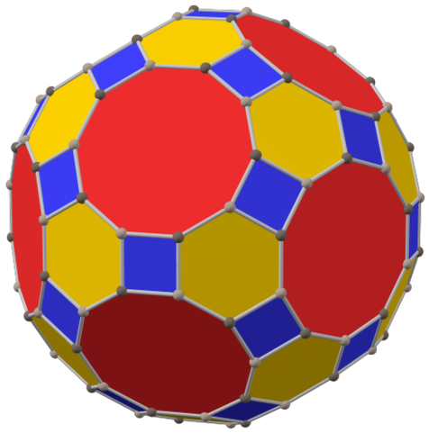
Image by Tilman Piesk, licensed under CC BY 4.0
This polyhedron has 120 vertices, the most of any Archimedean solid.
Exercise 5: Find the group presentation suggested by this polyhedron. (Hint: you will need three generators of order two. The group will be C2 x A5, the full symmetry group of the icosahedron or dodecahedron).
12. Snub Dodecahedron.
Image by Tilman Piesk, licensed under CC BY 4.0
This nice rendering clearly suggests the presentation.
Exercise 6: give the presentation and the corresponding group.
Further reading
One of the very best resources for exploring these topics in more detail is the classic book by Coxeter and Moser [6].
References:
- Maschke, H. “The representation of finite groups by Cayley color diagrams”, Amer. J. Math. 1896, Vol 18, p 156-194.
- Wikipedia, “Archimedean solid” https://en.wikipedia.org/wiki/Archimedean_solid. We use twelve images by Tilman Piesk in this article. These are all part of a Wikipedia series on Platonic, Archimedean and Catalan Solids https://commons.wikimedia.org/wiki/Category:Platonic,_Archimedean_and_Catalan_solids_with_direction_colors.
- The GAP System website: https://www.gap-system.org/.
- Wikipedia, “Archimedean graph” https://en.wikipedia.org/wiki/Archimedean_graph.
- N. S. Wedd, “Cayley Diagrams drawn on Platonic Solids” http://www.weddslist.com/groups/cayley-plat/index.html.
- Coxeter, H.S.M, Moser, W.O.J. Generators and Relations for Discrete Groups, Springer-Verlag, 1980.
Answers to exercises:
Ex. 1: It is not possible to color the squares with two different colors properly. For example, suppose we needed red and green squares to meet at each vertex. If we try to color the rectangles adjacent to a triangle, this cannot be done.
Ex. 2: There is no way to color the faces of a cubeoctahedron so that there are three mutually non-touching squares.
Ex. 3: < a, b | a^4, b^2, (a*b) > is the cyclic group C2. The truncated cubeoctahedron has 48 vertices. A Cayley graph for C2 has 2 vertices.
Ex. 4: GAP confirms that group: the presentation gives the symmetric group S4, with 24 elements.
Ex. 5: < a, b, c | a^2, b^2, c^2, (ac)^2, (ab)^3, (b*c)^5 >.
Ex. 6: < a, b, c | a^5, b^3, c^2, (abc) >, which is A5.